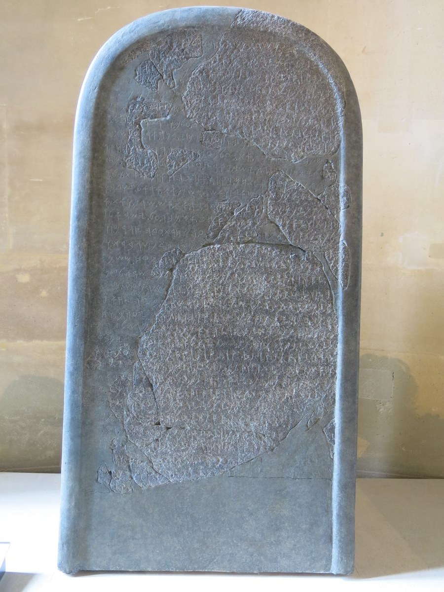

2 Kings 3 — The Mister Translation

2 Kings 3:4–5. This is the king of this chapter, in his own words and his own script, at about the time of the events. It was found at Dhiban in 1868, broken up in 1869, and put back together with the help of a paper impression taken before the break. The joins can be seen.
.jpg){kind=link}
Translator's Notes — verse by verse
“In the eighteenth year of Jehoshaphat”. Ahaziah began in the seventeenth and reigned two years (1 Kings 22:52, now on these pages), so the sum works. But 2 Kings 1:17 (now on these pages) dates the same accession to the second year of another Jehoram, Jehoshaphat’s son. The book gives both, and readers propose overlapping reigns. The ASV has “Jehoram”, and the NIV “Joram”, and the Hebrew uses both forms of the name for this king.
“The standing stone of Baal”. See matstsevah, the word of 1 Kings 14:23 (now on these pages). What Ahab made was reported as an altar and a house (1 Kings 16:32, now on these pages); the stone is new to the reader. The ASV has “the pillar of Baal”, the NWT 1984 “the sacred pillar”, and the Geneva “the image of Baal”. The Douay has “the statues of Baal”, in the plural, as the Greek does. It does not stay gone, or there were others: Jehu will bring out and burn the standing stones of Baal at 2 Kings 10:26–27.
“He clung; he did not turn from it”. The sins are plural and the “it” is singular, in the Hebrew as here. The ASV has “he cleaved”, the NIV “he clung”, and the Douay “he stuck to”. Dabaq is the word for what a man does to his wife (Genesis 2:24) and for what Israel was told to do to Jehovah (Deuteronomy 10:20, both now on these pages).
⭐ “A sheep-breeder”. Noqed is also what Amos is (Amos 1:1, now on these pages), and the two are the only places it stands. A king is not usually introduced by his trade. The KJV has “a sheepmaster”, the NIV “raised sheep”, the NWT 1984 “a sheep raiser”, and the TLB “sheep ranchers”, which adds his people. The Greek gives up and copies the word: nōkēd. The Targum has “owner of livestock”.
“A hundred thousand lambs and a hundred thousand rams in the wool”. The Hebrew ends with one word, “wool”. The KJV has “with the wool”, the ASV “the wool of a hundred thousand lambs”, and the NWT 1984 “unshorn male sheep”. The Geneva has “an hundred thousand rams with the wool”, and no lambs. “Used to pay” is a repeated act, and the verse does not say how often; the TLB has “an annual tribute”, and the Targum “year by year”. Josephus has two hundred thousand sheep with their fleeces (Antiquities 9.29, Niese’s Greek, numbered 9.3.1 in Whiston).
⭐ The other side of the story. Moab’s own account of these years survives. The Mesha Stele, found at Dhiban in 1868 and now in the Louvre, is the plate above. In it “Mesha, son of Kemosh(yat), king of Moab, the Dibonite”, as it is usually translated, says that Omri king of Israel oppressed Moab for many days because Chemosh was angry with his land, and that Omri’s son went on with it, and it tells how Chemosh gave him back his towns. It names Omri, and no other king of Israel, and it names Jehovah: at Nebo Mesha took “the vessels of Jehovah” and offered them to Chemosh. What can be read does not describe a siege by three kings or a sacrifice, or name Jehoshaphat. The last lines are lost, line 31 is damaged, and a disputed reading finds “the house of David” there. Scholars often take it as a parallel to this chapter, but the match is not certain. Each side’s record is the story of its own god’s help.
“Rebelled”. 2 Kings 1:1 (now on these pages) has said this already, in nearly the same words, and left it. Pasha is the verb of Israel’s break with David’s house (1 Kings 12:19, now on these pages), and its noun is pesha.
“I am as you are”. Jehoshaphat says it word for word as at 1 Kings 22:4 (now on these pages), to the son of the king who died in that war. The only change is that he says “I will go up” first. “The way of the wilderness of Edom” goes around the south of the Dead Sea and comes at Moab from behind. Josephus says that was the point: the enemy would not expect it (Antiquities 9.31).
⚠ “And the king of Edom”. 1 Kings 22:48 (now on these pages) said “there was no king in Edom; an officer was king”. The Hebrew may be calling the officer a king here, or the situation may have changed. Josephus has him under Jehoshaphat’s orders (Antiquities 9.30, numbered 9.3.1 in Whiston). Edom will make itself a king at 2 Kings 8:20.
“The animals that were at their feet”. The ASV has “the beasts that followed them”, and the NIV “the animals with them”. Seven days around a dry country, with an army’s animals: the campaign has failed before it has met anyone.
“Alas, for Jehovah has called these three kings”. Ahah is Joshua’s word after Ai (Joshua 7:7, now on these pages). The king of Israel says the sentence twice, here and at verse 13, and each time he puts it on Jehovah. Jehoshaphat asks what he asked at 1 Kings 22:7, in nearly the same words.
⭐ “Who poured water on the hands of Elijah”. One of the king’s servants knows who is in the camp, and this is how he describes him: not the man who divided the Jordan, but the man who washed his master’s hands. It is what “ministered to him” meant at 1 Kings 19:21 (now on these pages). The ASV has “who poured water on the hands of Elijah”, and the TLB “He was Elijah’s assistant”. The Hebrew does not say why he is there.
⭐ “What to me and to you?” The widow’s words to Elijah (1 Kings 17:18, now on these pages), now in Elisha’s mouth. The ASV has “What have I to do with thee?”, and the NIV “Why do you want to involve me?”. The TLB has “I want no part of you”, with “Elisha snarled”, which the Hebrew does not say. “The prophets of your father and … your mother” are the prophets of Baal and of the Asherah (1 Kings 18:19, now on these pages). The TLB has “the false prophets”, and the Hebrew does not need the adjective.
“As Jehovah of armies lives, before whom I stand”. This is Elijah’s oath, in Elijah’s words (1 Kings 18:15, now on these pages), so the mantle was not all he inherited. “Lift up the face” is the Hebrew for showing regard. The ASV has “I regard the presence of Jehoshaphat”, and the Douay “reverence the face of Josaphat”.
⭐ “Bring me a player”. Menaggen is one who plays strings, the word for what David was fetched to do for Saul (1 Samuel 16:16, now on these pages). The instrument is not named. The ASV has “a minstrel”, the NWT 1984 “a string-instrument player”, the NIV “a harpist”, and the TLB “someone to play the lute”. The verse does not say why he needs one. The Talmud reads it as a cost: “if he is a prophet, his prophecy departs from him” in anger, and Elisha has just been angry (Pesachim 66b); and the Presence does not rest in sadness but in joy (Shabbat 30b). Radak adds another reason, that he was still mourning Elijah. Josephus says only that he became inspired at the music (Antiquities 9.35, numbered 9.3.1 in Whiston). “The hand of Jehovah” was on Elijah at 1 Kings 18:46 (now on these pages).
⚠ “Make this wadi ditches, ditches”. The first word is a bare infinitive, so the Hebrew does not say who does the making. The NWT 1984 keeps that: “Let there be a making”. The ASV has an order, “Make this valley full of trenches”, and the NIV makes it God’s work, “I will fill this valley with pools of water”. A nachal is a stream bed that runs only in season, the word for the brook Cherith (1 Kings 17:3, now on these pages). “Ditches, ditches” is the Hebrew’s way of saying many.
“You will not see wind and you will not see rain”. On Carmel the wind and the rain came together (1 Kings 18:45, now on these pages). Josephus explains it: rain had fallen three days’ journey away in Edom (Antiquities 9.37, numbered 9.3.2 in Whiston), and the Hebrew does not say so. “A light thing” is the word of 1 Kings 16:31. The ASV has “but a light thing”, and the NIV “an easy thing”; the TLB has “only the beginning”, which is another sentence.
⚠ “Every good tree you will fell”. The law says, “you shall not destroy its trees” (Deuteronomy 20:19, now on these pages), and a prophet has just said the opposite in Jehovah’s name. The text does not notice. Rashi says it was allowed here because Moab was despised. Radak says the law speaks only of a siege, though the rabbis extend it, or that this was a ruling for the hour, like Elijah’s altar on Carmel. The Douay has “every fruitful tree”, and the TLB leaves the trees and the springs out of the verse. Elisha, who healed a spring at Jericho, now tells them to stop up every spring in Moab. “Ruin” is tak’ivu, a form that stands in one verse of the Hebrew Bible, from the verb for pain. The ASV has “mar”.
“When the grain offering goes up”. Elijah prayed at the going up of the grain offering on Carmel, late in the day (1 Kings 18:36, now on these pages). Here it is morning. No altar is mentioned in this camp, and the phrase tells the time. The NWT 1984 has “at the time of the going up of the grain offering”.
“All who could gird on a belt”. The verb of the proverb the king of Israel sent to Ben-hadad, “Let not the one who girds on boast” (1 Kings 20:11, now on these pages). The Douay has “girded with a belt”, and the ASV “able to put on armor”.
⭐ “Red as blood”. The Hebrew has three words sounding together: the water comes from Edom, it looks adummim, “red”, and it looks like dam, “blood”. Edom’s name was already a joke about red (Genesis 25:30, now on these pages). The phrase stands in one verse of the Hebrew Bible. The water is not said to be blood, as the Nile was (Exodus 7:20, now on these pages): it is the sun on it and Moab’s eyes. The TLB has “the sun looked red”, which moves the colour. Josephus says that water reddens most at sunrise (Antiquities 9.39, numbered 9.3.2 in Whiston).
“The kings have surely been destroyed”. The verb is charav, doubled. The same letters give “sword”, and the Greek and the Douay take it so, “It is the blood of the sword”; the NWT 1984 has “put to the sword”, and the KJV “surely slain”. Three kings who had just been dying of thirst are thought to have killed each other beside plenty of water. Josephus supplies the reason Moab gave: thirst.
⚠ “And they struck in it”. What is read is vayyakku, “and they struck”; the Hebrew writes something else, closer to “and they came” (ketiv and qere). The NWT 1984 has “they came into Moab”, and a footnote in its Reference edition calls that an emendation, in agreement with the Greek. The KJV has “they went forward smiting the Moabites”.
⭐ “Until they left its stones in Kir-hareseth”. The four orders of verse 19 are carried out, in a different order. The end of the verse is hard, and the Hebrew may be damaged. The KJV has “only in Kirharaseth left they the stones thereof”, the NIV “Only Kir Hareseth was left with its stones in place”, and the Douay “brick walls only remained”. The TLB has “finally fell to them”, and the Hebrew does not say that it fell, and the last verse says they left. Kir-hareseth is lamented by Isaiah and Jeremiah, also as Kir-heres (Isaiah 16:7, 11; Jeremiah 48:31, 36).
“To break through to the king of Edom”. “Break through” is the verb of the bears at 2 Kings 2:24 (now on these pages), in another form. The verse does not say why he went for Edom. Josephus says he tried for the part of the line he thought least guarded (Antiquities 9.42, numbered 9.3.2 in Whiston).
⚠ “And brought him up as a burnt offering on the wall”. The words are the words of Genesis, “bring him up there as a burnt offering” (Genesis 22:2, now on these pages). There a ram was provided. The law calls this an abomination (Deuteronomy 12:31, now on these pages), and Micah’s questioner asks whether to give “my firstborn for my revolt” (Micah 6:7, now on these pages), with the noun of this chapter’s rebellion. The verse does not say to whom the son was offered. Josephus says “to God” (Antiquities 9.43). In the Talmud Rav and Shmuel disagree whether it was for the sake of Heaven or for an idol (Sanhedrin 39b). A midrash reported by Rashi has Mesha ask why miracles happen to this people, be told of Abraham, and say “I too have a firstborn son”. Radak records another reading from his father: “his” firstborn is the king of Edom’s son, held by Moab, which is why Edom came, and he joins it to Amos 2:1, where Moab burned the bones of the king of Edom. The natural reading of the Hebrew is Mesha’s own son. The entry on Chemosh has more.
⚠ “And there was great fury against Israel”. This is the hardest line in the chapter, and the verse does not say whose fury it was. Qetsef gadol stands in six verses of the Hebrew Bible, and in the other five it is Jehovah’s (Deuteronomy 29:27, Jeremiah 21:5 and Zechariah 1:15, now on these pages; Jeremiah 32:37 and Zechariah 7:12); see qetsef. But why should Jehovah’s fury fall on Israel because a king of Moab killed his son? Readers have answered in several ways. Radak gives the two sides of the Talmud’s dispute: if the king meant it for Heaven, Jehovah was angry that a foreigner did not spare his son while Israel provoked him daily; if it was for an idol, Israel’s own sins were remembered then, since they too burned their sons. Radak’s father and brother make it Edom’s fury, for not being helped. Some modern readers take it as a real belief behind the verse in the power of Moab’s god in Moab’s land; the Mesha Stele explains Moab’s own subjection by Chemosh’s anger with his land. Others make it Israel’s own horror. The Geneva has “Israel was sore grieved”, the TLB “to the horror of the Israeli army” and “in disgust”, and Josephus says the kings pitied him and lifted the siege. The Greek has “great regret”. The ASV has “great wrath against Israel”, the KJV “great indignation against Israel”, and the NIV “The fury against Israel was great”, and all three leave the question where the Hebrew leaves it. This page does the same.
⚠ “And returned to the land”. Elisha said “he will give Moab into your hand” (verse 18). The cities, fields, springs and trees went as he said, and the king of Moab was not taken, and Kir-hareseth stands in the last verse. The chapter ends with the army going home, and it offers no comment. What can be read of Moab’s stone records victories.
Patterns worth carrying forward
Where this translation keeps the words exact and distinct: “standing stone”, as at 1 Kings 14:23; “sheep-breeder”, as at Amos 1:1; “rebelled”, as at 1 Kings 12:19; “in the wool”, the Hebrew’s one word; “What to me and to you?”, as at 1 Kings 17:18; “lift up the face”; “a player”, with no instrument; “wadi”; “ditches, ditches”; “a light thing”, as at 1 Kings 16:31; “red as blood”; “burnt offering”; and “great fury”, as at Deuteronomy 29:27, with no owner named. The written and read Hebrew are recorded at verse 24.
Echoes paid. “I am as you are” (1 Kings 22:4); “Is there not here a prophet?” (1 Kings 22:7); no king in Edom (1 Kings 22:48); “ministered to him” (1 Kings 19:21); “What to me and to you?” (1 Kings 17:18); the prophets of Baal and of the Asherah (1 Kings 18:19); “before whom I stand” (1 Kings 18:15); the player (1 Samuel 16:16); the hand of Jehovah (1 Kings 18:46); the good trees (Deuteronomy 20:19); the grain offering (1 Kings 18:36); the one who girds on (1 Kings 20:11); Edom and red (Genesis 25:30); “Break through” (2 Kings 2:24); the burnt offering (Genesis 22:2); and “my firstborn for my revolt” (Micah 6:7).
Echoes planted. The standing stones of Baal burned (2 Kings 10:26–27); Edom’s king (2 Kings 8:20); the bones of the king of Edom (Amos 2:1); and the mourning for Kir-hareseth (Isaiah 16:7; Jeremiah 48:31). None of these is translated here yet.
Next in this book: 2 Kings 4 — a widow’s oil runs until the jars run out; a woman of Shunem builds a room for a prophet, and her son dies; death in the pot; and twenty loaves feed a hundred men.